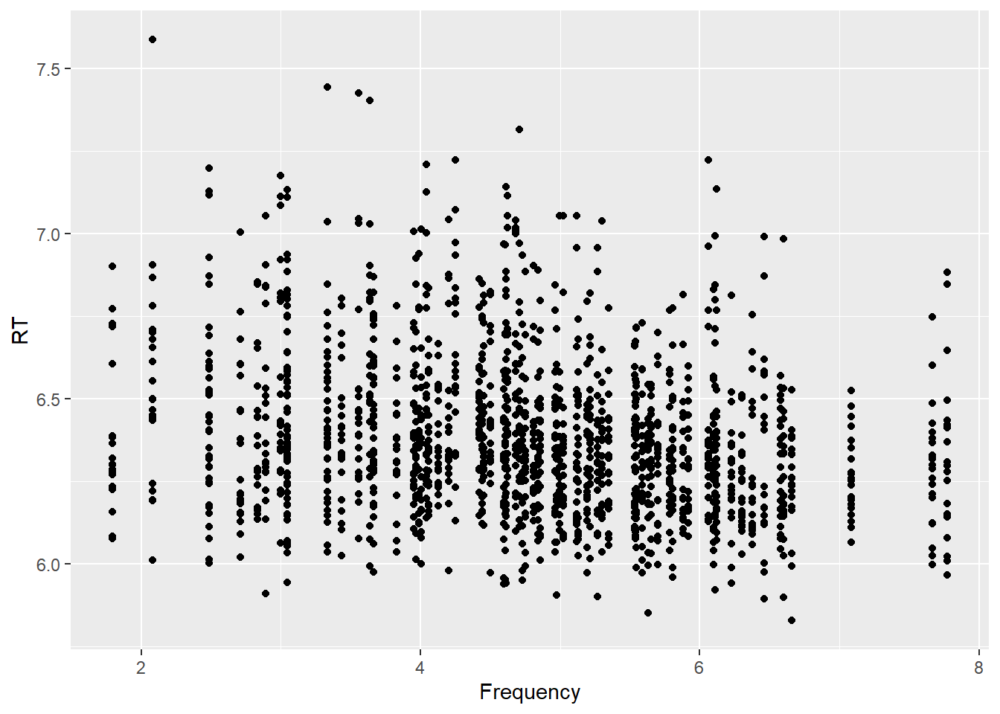
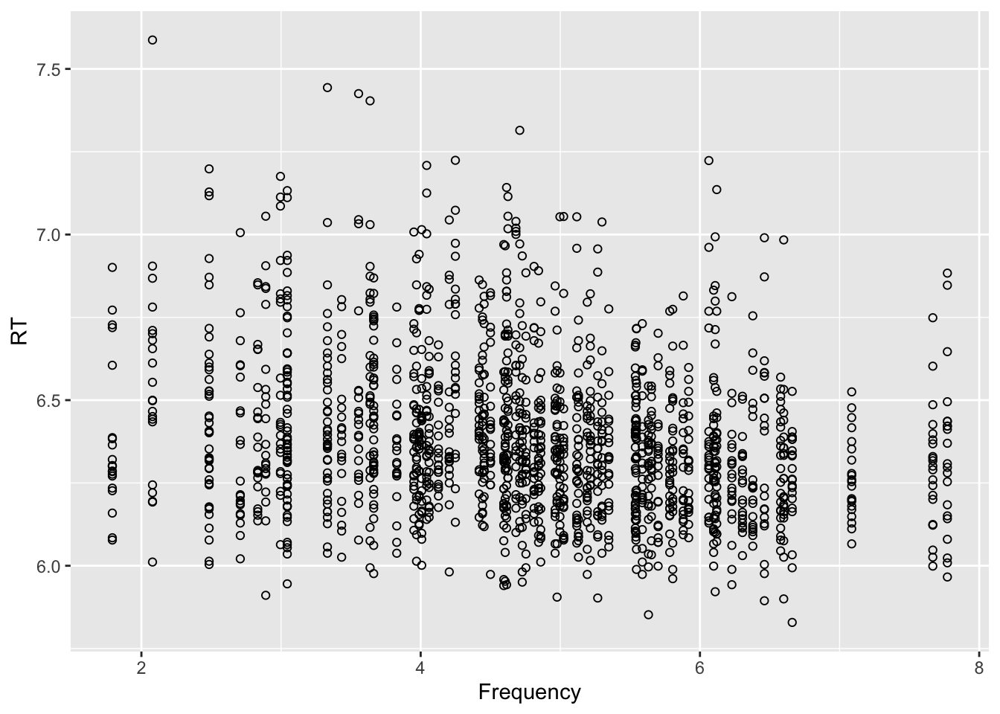
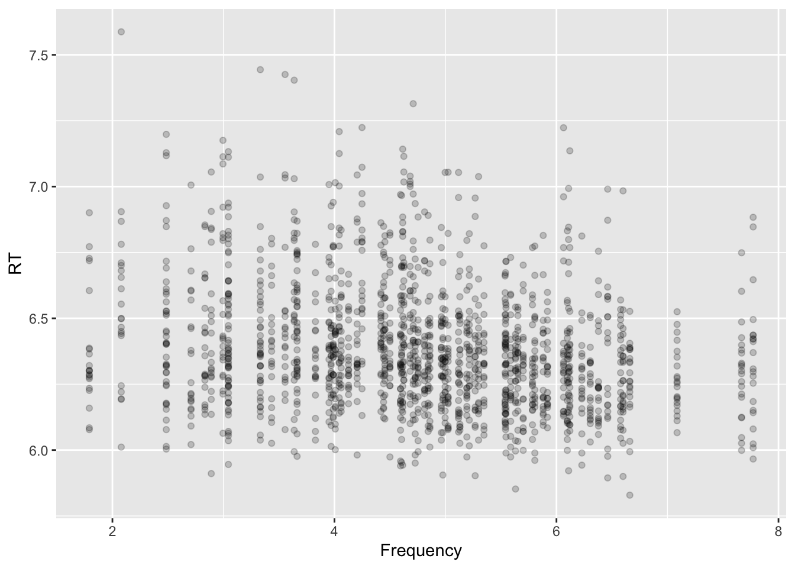
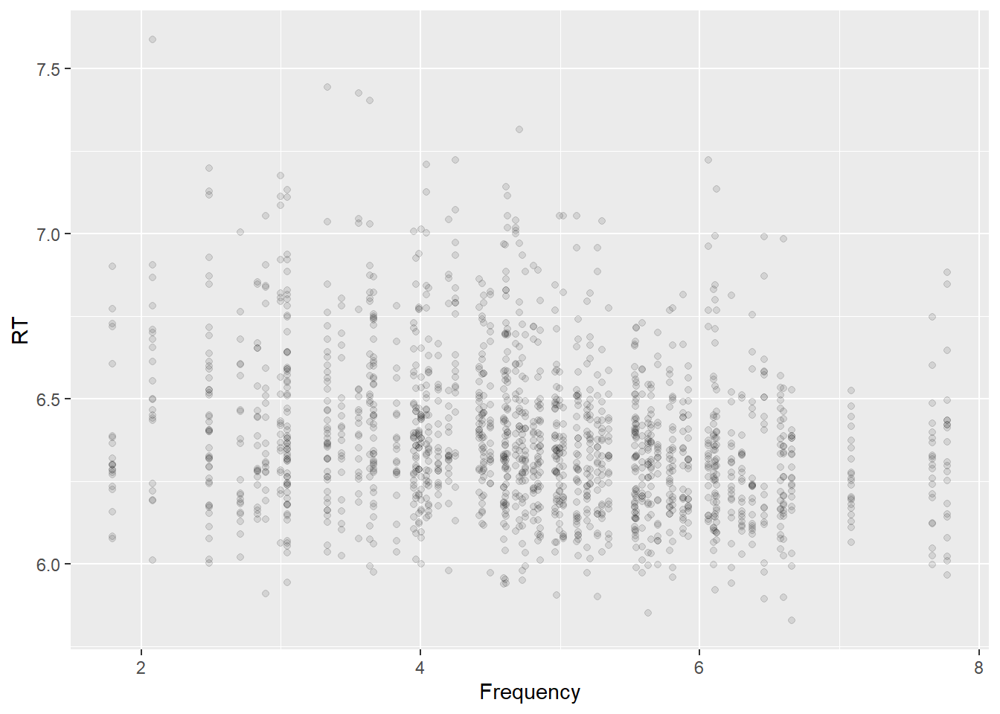
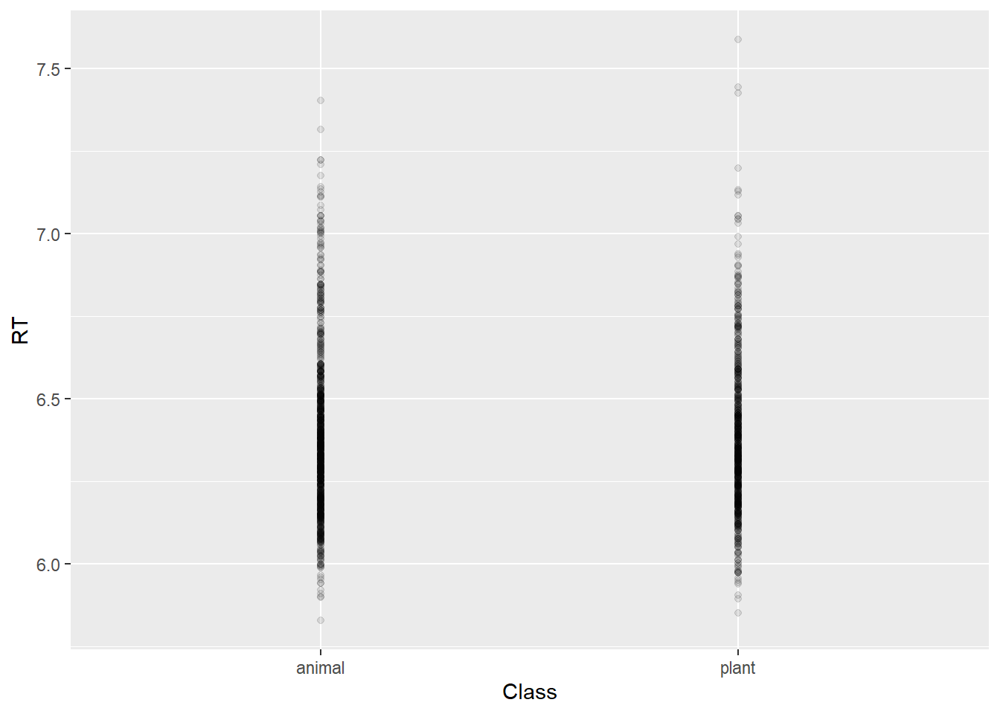
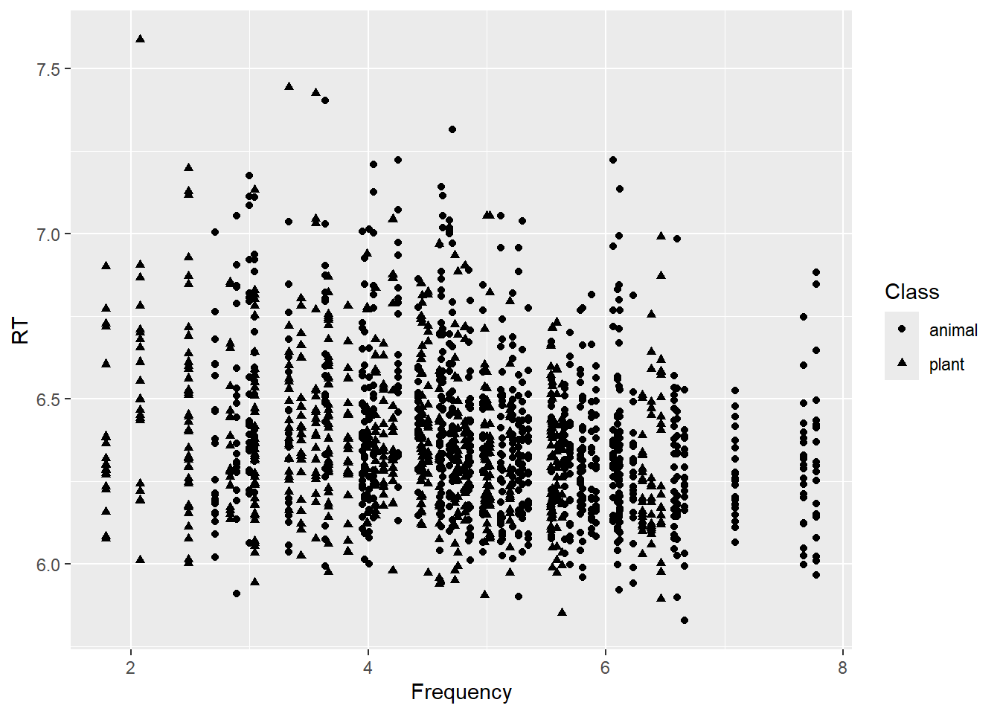
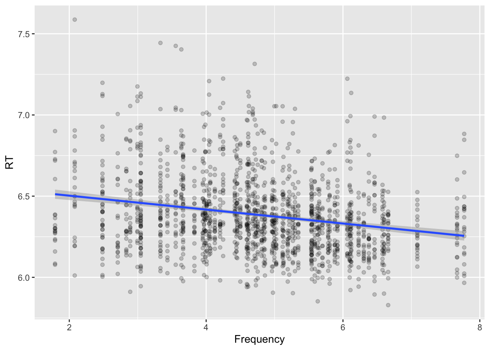
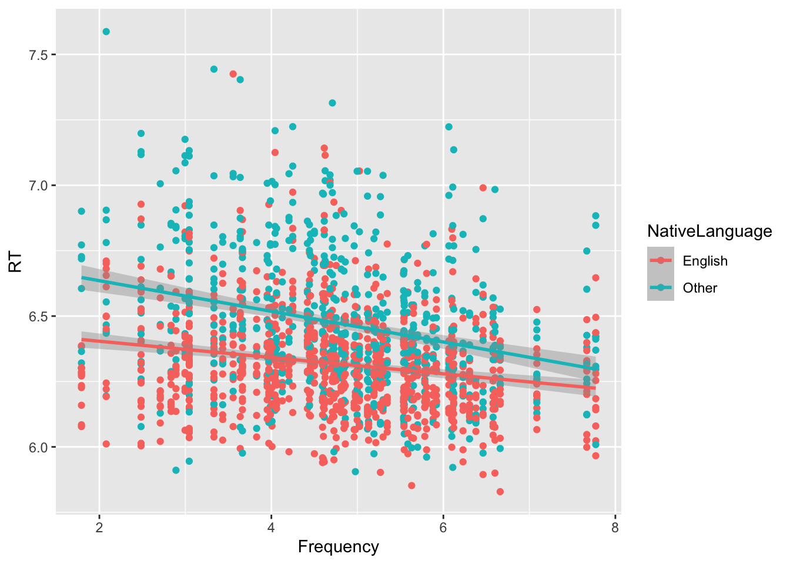

In Workgroup #2, we introduced plotting in R with ggplot2 package and practiced generating a plot in assignment #2.
In this section, we will expand with a few additional concepts useful to explore visually the relationship between two variables.
Scatter plot with two variables
Basic scatter plot
A scatter plot or XY plot displays the values of two variables along two axes, showing the relationship between them and possible correlations.
Scatter plots can be generated in ggplot using the geom_point() function.
Let’s look again at the lexdec dataset in the languageR package as used Workgroup #2 and explore the relationship between the lexical decision latency reaction time (RT) and the word Frequency .
library(languageR)library(tidyverse)
── Attaching core tidyverse packages ──────────────────────── tidyverse 2.0.0 ──
✔ dplyr 1.1.4 ✔ readr 2.1.5
✔ forcats 1.0.0 ✔ stringr 1.5.2
✔ ggplot2 4.0.0 ✔ tibble 3.3.0
✔ lubridate 1.9.4 ✔ tidyr 1.3.1
✔ purrr 1.1.0
── Conflicts ────────────────────────────────────────── tidyverse_conflicts() ──
✖ dplyr::filter() masks stats::filter()
✖ dplyr::lag() masks stats::lag()
ℹ Use the conflicted package (<http://conflicted.r-lib.org/>) to force all conflicts to become errors
ggplot(lexdec, aes(x = Frequency, y = RT)) +geom_point()

A few things can be noticed on the plot above:
There is not a continuous range of values of Frequency in the dataset, as it can be seen by the gaps between data. This is common in our field of research, where we have limited examples of continuous predictors, and those available like the word Frequency have several data points measured on the same value.
Several points are ‘overplotted’ on the same area, thus not providing a clear view of around which values there are more data points.
Overplotting
There are several ways to address overplotting and improve the visualization of the data.
We can change the shape of the data points from a solid circle to a hollow circle. The shape is controlled with the shape argument. The value for an empty circle is shape = 1 . Correspondence between values and shapes are in the reference manual of the function, although it is not immediate to find them. I leave here an image for reference:
ggplot(lexdec, aes(x = Frequency, y = RT)) +geom_point(shape =1)

Now you can see there are areas with bigger overlap of points (more measurements) in the center band of the plot.
In case of a large dataset, it is better to use the alpha (transparency) argument. This can be specified as a ratio. For example, a value alpha = 1/5 is to be interpreted as “5 points to be overplotted to get a full solid color”. That means that points are slightly transparent and overlapping them increases the shade.
Compare the plots below with two different values
ggplot(lexdec, aes(x = Frequency, y = RT)) +geom_point(alpha =1/5)

ggplot(lexdec, aes(x = Frequency, y = RT)) +geom_point(alpha =1/10)

Discrete variables
The most common case in linguistics research is the use of categorical predictors with a limited set of levels. A scatter plot with categorical data would look like the plot below, where we display the same Reaction Time data as a function of the word class.
ggplot(lexdec, aes(x = Class, y = RT)) +geom_point(alpha=1/50)

In those cases with very limited number of categories, a boxplot or violin plot will be a better option to display the relationship.
Mapping additional variables to features
A scatter plot shows the relationship between two variables in X and Y, but it can be used to reflect the relationship with more variables by mapping them to specific aesthetic features.
Four commonly used:
Shape
Color
Size
Transparency
Let’s add in the plots above on the RT relationship with Frequency, a mapping to the word semantic category in the variable Class.
ggplot(lexdec, aes(x = Frequency, y = RT,shape = Class)) +geom_point()

ggplot(lexdec, aes(x = Frequency, y = RT,color = Class)) +geom_point()
We can also add another variable, for example NativeLanguage encoding the native on non-native nature of the speakers. Readability of the graph may be difficult though .
We will look in next workgroups at different ways to represent the results of linear modeling, but we introduce here a useful feature of ggplot to plot fits to the data as another layer.
The function geom_smooth() adds a layer to a plot with aid the visualization of trends and relationships. It has two main arguments:
method : function to use to calculate the ‘smoothed’ version of the data. The value that is relevant to us is method = 'lm' , that would calculate a linear model fit and overplot it.
formula: Formula of the linear fit model. The default value is formula = y ~ x . We will come back to this point in later lectures. For now we can use the default with no need to specify it.
ggplot(lexdec, aes(x = Frequency, y = RT)) +geom_point(alpha =1/5) +geom_smooth(method="lm")
`geom_smooth()` using formula = 'y ~ x'

What we can see now in the plot is a linear fit to the data, showing a negative correlation between Frequency and RT, with higher frequency words (more common) showing faster reaction times.
An interesting characteristic of this feature is that it applies the fit to the data as defined in ggplot aes(), so if we mapped another variable, like NativeLanguage to an aesthetic, we will get two fits, one per group:
ggplot(lexdec, aes(x = Frequency, y = RT, color = NativeLanguage))+geom_point() +geom_smooth(method="lm")
`geom_smooth()` using formula = 'y ~ x'

The plot above shows :
In general there is a trend that words are comprehended/processed faster the most frequent they are.
The strength of this effect is more pronounced in Non-native English speakers.
Now that we are able to observe the relationship between two variables let’s move to quantifying it and assessing their statistical significance.